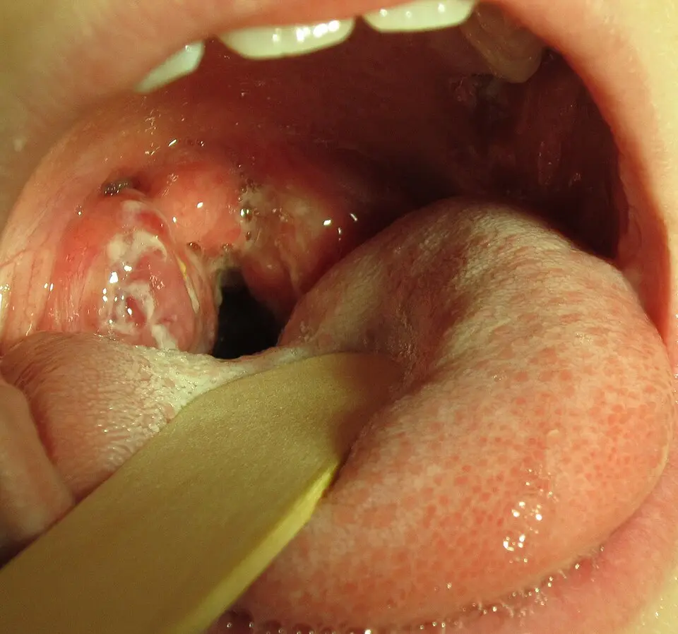
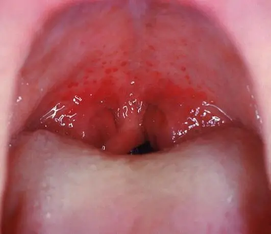

DX.1 — Pharyngite aiguë
La pharyngite aiguë est la cause la plus fréquente d'une douleur pharyngée : elle est surtout virale et guérit seule, même lorsque le streptocoque du groupe A la provoqueS1S8. Le médecin écarte d'abord la menace respiratoire et l'abcès, puis réserve le test rapide et l'antibiotique aux patients à risque de complicationS1S7.
1. Définition
Les pédiatres infectiologues des Hôpitaux universitaires de Genève (HUG) emploient en 2023 les termes « pharyngite » et « angine » pour la même entité clinique de l'enfant et de l'adulteS1. Ils la définissent par des maux de gorge aigus et fébriles, d'origine majoritairement virale, dont le streptocoque du groupe A (SGA) est la première cause bactérienneS1. Le groupe de l'European Society of Clinical Microbiology and Infectious Diseases (ESCMID) traite la même situation sous le nom de mal de gorge aigu (« acute sore throat »)S7. Le diagnostic de pharyngite reste donc clinique et syndromique : il ne désigne aucun germe tant qu'un frottis ne l'a pas identifiéS1.
2. Épidémiologie (Suisse, puis Europe)
La pharyngite amène souvent l'enfant au cabinet du pédiatre et aux urgences pédiatriques, d'après l'équipe genevoise qui pilote la recommandation suisseS1. Le SGA cause 5 à 15 % des angines de l'adulte et 20 à 30 % de celles de l'enfant ; les virus respiratoires expliquent la majorité des autresS1. La forme streptococcique survient surtout en hiver, entre 5 et 15 ans, et rarement avant 3 ansS1. Les chiffres suisses et européens, le portage asymptomatique et le recul du rhumatisme articulaire aigu expliquent pourquoi la Suisse a restreint l'antibiothérapie.
Chiffres utiles : Suisse, puis Europe
| Donnée | Valeur | Population et année | Source |
|---|---|---|---|
| Part du SGA parmi les angines de l'adulte | 5 à 15 % | Suisse, revue des HUG, 2023 | S1 |
| Part du SGA parmi les angines de l'enfant | 20 à 30 % | Suisse, revue des HUG, 2023 | S1 |
| Part du SGA parmi les pharyngites de l'enfant | 20 à 40 % | Méta-analyse Cochrane, 2016 | S9 |
| Incidence du rhumatisme articulaire aigu | Moins de 0,1 cas pour 100 000 personnes | Suisse, chiffre cité en 2023 | S1 |
| Choix d'antibiotique non recommandé dans la pharyngite de l'enfant | 38 % | Réseau Sentinella suisse, 2017-2022, 52 098 observations | S5 |
| Guérison sans antibiotique à une semaine | 82 % des patients | 29 essais, 15 337 cas, Cochrane 2021 | S8 |
Les deux premières lignes montrent que l'âge triple au moins la probabilité streptococcique, ce qui justifie des scores et des seuils différents chez l'enfantS1. La dernière ligne explique que l'abstention reste sûre : la plupart des maux de gorge disparaissent en une semaine, avec ou sans antibiotiqueS8.
Portage asymptomatique : le piège du frottis positif
Jusqu'à 25 % des enfants portent le SGA sans symptôme, et ce portage peut persister de nombreux mois avec un faible risque de transmissionS1. Un frottis positif chez un enfant enrhumé peut donc refléter ce portage, alors qu'un virus explique réellement la fièvre et la douleurS1.
Ce mécanisme explique pourquoi la recommandation suisse déconseille le frottis lorsque son résultat ne modifierait pas la décision thérapeutiqueS1. Le portage n'impose aucune éradication chez l'enfant bien portant, car il ne provoque ni symptôme ni contagion notableS1.
Pourquoi le rhumatisme articulaire aigu ne justifie plus l'antibiotique systématique
L'antibiothérapie systématique remonte aux études militaires américaines des années 1950 à 1960, menées quand le rhumatisme articulaire aigu (RAA) restait fréquentS1. Le RAA a reculé dans les pays riches dès la fin du XIXe siècle, au moins cinquante ans avant l'apparition des antibiotiquesS1.
Le recul s'explique probablement par le remplacement des souches rhumatogènes et par l'amélioration de l'hygiène et de la nutritionS1. L'incidence du RAA n'a pas augmenté dans les pays qui ont abandonné l'antibiothérapie systématique depuis plusieurs décenniesS1.
La méta-analyse Cochrane confirme une réduction du RAA sous antibiotique (rapport de cotes de Peto 0,36), mais elle souligne que les cas sont devenus très rares dans les essais récentsS8. Le traitement antibiotique ne prévient pas la glomérulonéphrite aiguë post-streptococcique, selon la revue suisse de 2023S1.
3. Physiopathologie
La douleur naît de l'inflammation des amygdales palatines et de la paroi pharyngée, qui gonflent, rougissent et peuvent se couvrir d'un enduit blanchâtreS21. La base anatomo-fonctionnelle montre pourquoi l'examen regarde d'abord la symétrie des loges amygdaliennes et la position de la luette. Le spectre des germes et la protéine M du SGA expliquent la différence entre la maladie locale et ses complications à distance. Le tableau de corrélation relie chaque perturbation à l'examen qui la montre et au traitement qui la corrige.
Base à connaître : l'oropharynx et les amygdales palatines
L'amygdale palatine est située dans la loge latérale de l'oropharynx, sous le voile du palais et de part et d'autre de la luette, au-dessus de la base de la langueS21. L'examen compare les deux côtés, car une inflammation bilatérale signe l'angine alors qu'un bombement unilatéral du voile oriente vers une collectionS13.
Amygdales normales et amygdalite. Ce schéma publié de Blausen Medical compare une gorge normale, à gauche, et une gorge inflammatoire, à droiteS21.

Le lecteur doit repérer d'abord seul la luette, le voile, puis chaque amygdale sur l'image brute.
La copie annotée de « Amygdales normales et amygdalite » numérote les repères que la lecture guidée explique ci-dessous.
- 1. La luette reste médiane : sa déviation latérale signale un bombement du voile, donc une collection (DX.8)S13.
- 2. Le voile du palais normal reste plat et symétrique ; il ne bombe jamais dans une pharyngite simpleS13.
- 3. L'amygdale normale reste petite, rose et contenue dans sa logeS21.
- 4. L'amygdale enflammée grossit et porte des taches blanchâtres d'exsudat, qui ne prouvent pas une cause bactérienneS21S1.
- 5. La paroi pharyngée rouge témoigne de l'inflammation muqueuse qui provoque la douleur à la déglutitionS21.
Ce que l'image décide. Une inflammation bilatérale et symétrique oriente vers la pharyngite ; une asymétrie du voile avec luette déviée impose de chercher l'abcès périamygdalienS13.

Spectre des germes : virus d'abord, SGA ensuite
Les rhinovirus, les coronavirus et les adénovirus dominent les pharyngites virales, d'après la revue suisse de 2023S1. Le SGA reste la cause bactérienne la plus fréquente, mais il ne cause qu'une minorité des angines de l'adulteS1.
Fusobacterium necrophorum a été retrouvé chez 16 % des adultes de 15 à 40 ans atteints d'amygdalite, contre 9 % des témoins sains, dans un cabinet danoisS11. Cette tendance atteignait 24 % contre 9 % chez les 15 à 29 ans, ce qui désigne l'adolescent et le jeune adulte comme groupe à surveillerS11.
Les patients porteurs de F. necrophorum ne présentaient pas de score de Centor plus élevé que les autres, ce qui rend la clinique incapable de les repérerS11. Dans la mononucléose compliquée d'amygdalite, une culture bactérienne n'était positive que chez 28 % des patients danois hospitalisésS12.
La protéine M du SGA et les complications à distance
Plus de 240 génotypes de SGA se distinguent par la séquence du gène de la protéine M, une protéine de surface qui contribue à la virulenceS1. Certains génotypes, comme les types 1, 3, 5, 6, 14, 18, 19 et 24, sont associés au RAAS1.
D'autres génotypes, comme les types 2, 49, 55, 57, 59, 60 et 61, s'associent plutôt à la cellulite et à la glomérulonéphrite aiguëS1. Cette diversité explique que la complication immunologique dépende de la souche circulante et non de la seule intensité de l'angineS1.
Le RAA survient après une latence d'environ 2 à 3 semaines, et la glomérulonéphrite une à trois semaines après la pharyngiteS1. Les complications suppurées, abcès périamygdalien ou rétropharyngé et adénite cervicale, apparaissent dans les 7 à 14 jours suivant les premiers symptômesS1.
Corrélation : perturbation, exploration, thérapeutique
| Perturbation | Exploration qui la montre | Thérapeutique et mécanisme |
|---|---|---|
| L'inflammation muqueuse des amygdales provoque douleur et dysphagieS21. | L'inspection montre rougeur, œdème et exsudatS1. | Le paracétamol ou l'ibuprofène soulagent la douleur et la fièvre, selon l'ESCMIDS7. |
| La réplication virale explique la majorité des casS1. | Toux, rhinorrhée et enrouement orientent vers le virusS1. | Le traitement reste symptomatique ; aucun antibiotique ne raccourcit une viroseS4. |
| La colonisation pharyngée par le SGA déclenche une infection ou un simple portageS1. | Le test antigénique rapide détecte l'antigène du SGA en quelques minutesS9. | L'amoxicilline n'est prescrite qu'en présence d'un critère d'inquiétudeS1. |
| L'extension de l'infection au-delà de la capsule amygdalienne forme une collectionS13. | L'asymétrie du voile et le trismus la révèlentS13. | La ponction et le drainage traitent la collection, selon le DX.8S13. |
Ce tableau montre que l'examen clinique décide d'abord du terrain et de la gravité, avant toute recherche du germeS1.
4. Démarche diagnostique
Le médecin élimine d'abord les diagnostics qui tuent ou laissent une séquelle, puis il traite le diagnostic fréquent avec le moins de gestes possibleS1S13. Le tableau des graves d'abord indique que l'abcès périamygdalien, l'obstruction des voies aériennes et le syndrome de Lemierre passent avant la pharyngite simple. La mononucléose et la primo-infection par le virus de l'immunodéficience humaine (VIH) figurent ensuite parmi les fréquents trompeurs, car leur prise en charge diverge.
Les graves d'abord, puis les fréquents
| Diagnostic | Élément qui tranche | Piège | Conduite si positif |
|---|---|---|---|
| 🚩 Abcès périamygdalien (DX.8) | Odynodysphagie croissante, bombement homolatéral du voile et trismusS13. | Le trismus manque souvent chez l'enfantS13. | Avis d'oto-rhino-laryngologie (ORL) urgent pour ponction et drainageS13. |
| 🚩 Obstruction des voies aériennes supérieures | Dyspnée, stridor ou salive non avalée signalent l'obstructionS14. | Un abaisse-langue forcé peut aggraver la gêne respiratoire. | Transfert immédiat vers un centre disposant d'ORL et d'anesthésieS14. |
| 🚩 Syndrome de Lemierre | Une fièvre persistante avec douleur cervicale suit l'angineS14. | L'amélioration initiale fait croire à une guérison. | Hospitalisation, hémocultures et imagerie cervicale. |
| Mononucléose infectieuse | L'exsudat s'accompagne d'adénopathies diffuses et de fatigue. | L'amoxicilline provoque un exanthème dans plus de 90 % des casS15. | Le traitement reste symptomatique ; aucun antibiotique. |
| Pharyngite à SGA | Le score de Centor élevé rend le SGA probableS1. | Le portage rend un frottis faussement explicatifS1. | L'antibiotique n'est retenu qu'avec un critère d'inquiétudeS1. |
| Pharyngite virale | Toux, rhinorrhée, aphtes ou enrouement l'oriententS1. | L'exsudat ne prouve pas une bactérieS1. | Le traitement symptomatique suffit, avec réévaluation si aggravationS1. |
Les trois premières lignes justifient l'ordre de l'examen : la respiration et l'asymétrie du voile se regardent avant le scoreS13S14.
Mononucléose infectieuse : le fréquent qui piège
Le virus d'Epstein-Barr provoque une amygdalite exsudative qui ressemble à une angine streptococcique, et l'exsudat ne permet pas de les distinguerS1. L'information professionnelle suisse de l'amoxicilline contre-indique ce médicament dans la mononucléose, car plus de 90 % des patients développent alors un exanthèmeS15.
Dans une série danoise de 257 patients hospitalisés pour mononucléose avec amygdalite ou abcès, la plupart des cultures ne justifiaient aucun antibiotiqueS12. Le staphylocoque doré était retrouvé chez 22 % des patients porteurs d'abcès, ce qui rappelle que la mononucléose peut aussi se compliquer d'une collectionS12.
Primo-infection par le VIH : penser au dépistage
Une revue suisse de 2025 sur les gestes inutiles en infectiologie de premier recours recommande de considérer le dépistage du VIH devant une pharyngiteS4. Le dépistage s'impose surtout lorsque la pharyngite s'associe à un exanthème, à des adénopathies diffuses ou à une exposition à risque récenteS4.
Cette recherche évite de méconnaître une infection transmissible au moment où la charge virale et la contagiosité sont les plus élevéesS4.
5. Anamnèse ciblée et drapeaux rouges
L'anamnèse cherche d'abord un signe de gravité, puis les arguments viraux ou streptococciques, puis les critères d'inquiétude qui feraient changer la conduiteS1. Chaque caractéristique de la douleur porte sa signification, et les questions ciblées relient chaque réponse à un mécanisme. Les drapeaux rouges imposent chacun une action précise, dont certaines ne tolèrent aucun délai.
Caractériser la douleur pharyngée : typique ou non
| Caractère | Forme typique de la pharyngite | Forme atypique et sa signification |
|---|---|---|
| Siège | La douleur reste médiane ou bilatérale, ce qui reflète une atteinte symétriqueS21. | Une douleur nettement unilatérale oriente vers une collection périamygdalienneS13. |
| Installation | Une fièvre d'apparition brutale évoque le SGAS1. | Une aggravation progressive après quelques jours fait chercher l'abcèsS13. |
| Intensité | La douleur gêne la déglutition sans l'empêcher. | L'incapacité de boire ou d'avaler sa salive signe une gravité. |
| Signes associés | Toux, rhinorrhée, aphtes et enrouement orientent vers un virusS1. | Une voix étouffée et un trismus orientent vers l'abcèsS13. |
| Évolution | Les symptômes régressent spontanément en quelques joursS8. | Une reprise fébrile avec douleur cervicale fait évoquer le syndrome de LemierreS14. |
| Facteurs calmants | Les antalgiques simples soulagent nettement la douleurS7. | Une douleur rebelle aux antalgiques doit faire réexaminer la gorge. |
La pharyngite typique est donc bilatérale, brève et soulagée ; chaque écart à ce profil impose de revoir le diagnostic avant de prescrireS1.
Questions ciblées et leur raison
- Toux, rhinorrhée, enrouement ? Leur présence oriente vers une cause virale, car le SGA atteint rarement le nez et le larynxS1.
- Contact récent avec un cas d'angine à SGA ? Une exposition dans les deux semaines précédentes rend l'origine streptococcique plus probableS1.
- Antécédent personnel ou familial de RAA ? Il justifie un test rapide quel que soit le score de CentorS1.
- Immunosuppression ou valvulopathie à risque d'endocardite ? Elles augmentent le risque de complication et rendent l'antibiotique discutable dès la confirmationS1.
- Migration récente depuis un pays en développement ? Elle augmente le risque de RAA et figure parmi les critères d'inquiétudeS1.
- Allergie aux pénicillines, et de quel type ? Une réaction sévère exclut toute bêta-lactamine et oriente vers la clindamycineS1S18.
- Médicaments en cours ? L'allopurinol favorise l'exanthème sous amoxicilline, et les anticoagulants contre-indiquent un geste invasif non préparéS15.
- Capacité à boire et à avaler la salive ? Une salive non avalée signale une obstruction ou une collection et impose une évaluation immédiateS14.
Drapeaux rouges : signification et action immédiate
| Drapeau rouge | Signification | Action immédiate |
|---|---|---|
| 🚩 Dyspnée, stridor, salive non avalée | L'obstruction des voies aériennes menace la vieS14. | Ne pas allonger ni forcer l'examen ; transfert médicalisé vers l'ORL et l'anesthésieS14. |
| 🚩 Trismus, voix étouffée, voile bombant d'un côté | Une collection périamygdalienne s'est forméeS13. | Avis ORL le jour même pour ponction et drainageS13. |
| 🚩 Torticolis, tuméfaction ou douleur cervicale | L'infection a gagné les espaces profonds du couS14. | Hospitalisation et imagerie cervicale injectée. |
| 🚩 Mauvais état général, sepsis | L'infection devient systémiqueS1. | Antibiothérapie à considérer d'emblée et transfert hospitalierS1. |
| 🚩 Reprise fébrile après amélioration | Une thrombophlébite jugulaire septique (Lemierre) peut compliquer l'angineS14. | Hémocultures et imagerie vasculaire cervicale en urgence. |
| 🚩 Déshydratation chez l'enfant | La dysphagie empêche les apports oraux. | Réhydratation et réévaluation de la gorge le jour même. |
Ces drapeaux rouges priment sur le score de Centor : un patient qui en porte un ne relève plus de l'algorithme ambulatoireS1.
6. Examen physique ciblé, région par région
L'examen suit l'ordre du chevet : état général et respiration, puis inspection de l'oropharynx, puis palpation du cou, puis peau et abdomenS1. Chaque étape a sa fenêtre : état général et respiration, oropharynx, cou et ganglions et peau, rate et foie. Le normal se décrit d'abord, car seul l'écart au normal oriente la décisionS21.
Région 1 — État général et respiration
Le médecin observe la position, la voix, la déglutition de la salive et le rythme respiratoire avant d'ouvrir la bouche du patientS14. Un patient assis, penché en avant, qui bave et respire bruyamment présente une obstruction haute et ne doit pas être examiné de forceS14.
La température, l'hydratation et l'aspect général complètent ce temps, car le mauvais état général figure parmi les signes d'alerte de la recommandation suisseS1. Ce temps décide immédiatement si le reste de l'examen se fait au cabinet ou dans un service équipéS1.
Région 2 — Oropharynx : signe, geste, aspect
Le geste consiste à éclairer la gorge, à abaisser doucement la langue et à comparer les deux loges amygdaliennes, le voile et la luetteS13. La recherche porte sur l'exsudat, les pétéchies palatines, l'œdème de la luette, l'asymétrie du voile et la déviation de la luetteS1S13.
Amygdalite exsudative à SGA chez un enfant de huit ans. Cette photographie montre une angine à SGA confirmée par culture, avec l'exsudat amygdalien typiqueS22.

Le lecteur doit repérer d'abord seul l'exsudat et la symétrie des deux loges sur l'image brute.
La copie annotée de « Amygdalite exsudative à SGA chez un enfant de huit ans » numérote les repères que la lecture guidée explique ci-dessous.
Ce que l'image décide. L'exsudat bilatéral compte pour un point de Centor, mais il ne distingue pas le SGA d'un virus ; aucun antibiotique ne découle de cette seule imageS1.

Pétéchies du voile dans une angine à SGA. Cette photographie montre la rougeur, l'œdème de l'oropharynx et les pétéchies du voile du palais d'une angine streptococciqueS23.

Le lecteur doit repérer d'abord seul les points rouges du voile sur l'image brute.
La copie annotée de « Pétéchies du voile dans une angine à SGA » numérote les repères que la lecture guidée explique ci-dessous.
Ce que l'image décide. Les pétéchies palatines et l'œdème de la luette font partie des éléments suggestifs d'une angine à SGA, selon la revue suisseS1.

Région 3 — Cou et ganglions
Le médecin palpe les chaînes jugulo-carotidiennes antérieures, puis les régions postérieures, puis il compare la sensibilité des deux côtésS1. Une adénopathie cervicale antérieure sensible compte pour un point de Centor et oriente vers le SGAS1.
Des adénopathies cervicales postérieures et diffuses orientent plutôt vers la mononucléose, qui ne relève pas de l'antibiotiqueS15. Un empâtement cervical unilatéral, un torticolis ou une douleur le long du sterno-cléido-mastoïdien signalent une extension profonde et imposent l'hospitalisationS14.
Région 4 — Peau, rate et foie
L'inspection de la peau recherche un exanthème scarlatiniforme, un exanthème diffus ou des lésions des mains et des piedsS1. La revue suisse recommande d'évaluer très soigneusement l'enfant atteint de scarlatine, sans en faire un critère strict d'antibiothérapieS1.
La palpation abdominale recherche une splénomégalie, qui oriente vers la mononucléose et contre-indique alors l'amoxicillineS15. Un exanthème apparu sous amoxicilline oriente aussi vers une mononucléose méconnue, plutôt qu'une allergie vraie aux pénicillinesS15.
7. Approche syndromique
Trois syndromes se distinguent au chevet, chacun avec ses signes fonctionnels et physiquesS1S13. Le tableau syndromique les oppose, et les fenêtres définissent les signes clés : critères de Centor, trismus et voix de « patate chaude ».
Syndromes 7.1 à 7.3
| Syndrome | Signes fonctionnels | Signes physiques |
|---|---|---|
| 7.1 Pharyngite virale | Douleur modérée, toux, rhinorrhée, enrouementS1. | Rougeur diffuse, parfois aphtes buccauxS1. |
| 7.2 Angine streptococcique probable | Fièvre brutale, absence de toux, contage récentS1. | Exsudat, adénopathie antérieure sensible, pétéchies palatines, luette œdémateuseS1. |
| 7.3 Angine compliquée | Odynodysphagie croissante, voix étouffée, impossibilité d'avalerS13. | Bombement unilatéral du voile, trismus, luette déviéeS13. |
Le syndrome 7.3 relève du DX.8 et sort de cette leçon dès qu'il est reconnuS13.
Les critères de Centor et le score de McIsaac
Le score de Centor compte un point pour chacun de quatre critères : absence de toux, exsudat amygdalien, fièvre rapportée ou supérieure à 38 °C, adénopathie cervicale antérieure sensibleS1. Le score de McIsaac ajoute un point pour l'âge de 3 à 14 ans aux critères de CentorS25. Il ne change rien de 15 à 44 ans et retire un point dès 45 ansS25. La Société suisse d'infectiologie (SSI) retient le score de Centor, plus simple et le plus utilisé en Suisse, et non le score de McIsaacS24.
Un score de Centor de 3 correspond à une probabilité de test rapide positif de 31,6 %, et un score de 4 à une probabilité de 55,7 %S1. Le score estime donc une probabilité et ne prouve jamais l'infection, car presque la moitié des patients à 4 points ont un test négatifS1.
Le trismus : définition, geste, mécanisme
Le trismus désigne une limitation de l'ouverture buccale, que le médecin recherche en demandant au patient d'ouvrir la bouche au maximumS13. Il provient de l'inflammation qui atteint les muscles masticateurs voisins de la loge amygdalienne, ce qui en fait un signe d'extension hors de l'amygdaleS13.
Le trismus appartient aux drapeaux rouges de l'abcès périamygdalien, mais il manque souvent chez l'enfant, ce qui ne permet pas d'exclure l'abcèsS13.
8. Diagnostic positif et critères
Aucun critère clinique ne suffit à affirmer l'angine à SGA, car l'anamnèse et l'examen ne distinguent pas avec certitude la cause virale de la cause streptococciqueS1. Le diagnostic positif repose donc sur deux étages : le score de probabilité, puis la confirmation par test rapide lorsque le résultat changerait la conduiteS1.
Ce qui suffit et ce qui ne suffit pas
| Situation | Suffit-il ? | Raison |
|---|---|---|
| Exsudat amygdalien isolé | Non | L'exsudat existe aussi dans les pharyngites virales et la mononucléoseS1. |
| Centor 0 à 2 | Suffit pour renoncer au test | Le SGA reste peu probable et le test n'est pas recommandéS1S7. |
| Centor 3 à 4 sans critère d'inquiétude | Non, mais aucun test n'est exigé | La recommandation suisse propose un traitement symptomatique et une réévaluation à 48-72 heuresS1. |
| Centor 3 ou plus avec critère d'inquiétude | Le test rapide devient nécessaire | Un test positif conduit alors à l'antibiotiqueS1. |
| Antécédent de RAA | Le test rapide est indiqué | Le test se justifie quel que soit le score de CentorS1. |
Les scores servent aussi à documenter la maladie pour comparer à la consultation de contrôle, même sans antibiotique envisagéS1.
Confirmation microbiologique : quand elle sert
La revue suisse rappelle que le frottis pharyngé confirme ou infirme le diagnostic de pharyngite à SGA, car la clinique seule n'est ni sensible ni spécifiqueS1. Elle limite pourtant le frottis aux situations où son résultat change la décision, car le geste est inconfortableS1.
Dans une enquête citée par la revue, 42 % des pédiatres commençaient l'antibiotique avant le résultat et le poursuivaient malgré un test négatifS1. Ce chiffre montre pourquoi la décision doit précéder le test : un test demandé sans plan thérapeutique n'améliore pas la prise en chargeS1.
9. Examens complémentaires
9.a Gold standard : la culture du frottis pharyngé sur gélose au sang reste la référence à laquelle la méta-analyse Cochrane compare le test rapideS9.
9.b Première intention : le test antigénique rapide ne se demande qu'en présence d'un critère d'inquiétude et d'un score de Centor d'au moins 3S1.
9.c Alternatives : la culture reste facultative après un test négatif, selon la directive suisse et l'ESCMIDS1S7.
9.d Deuxième intention : la biologie et le dépistage ciblé servent au diagnostic différentiel, et l'imagerie sert seulement à la recherche d'une complicationS4S13.
Test antigénique rapide du SGA (Strepto-test)
Indication : l'indication pédiatrique genevoise retient un score de Centor ou de McIsaac d'au moins 3, chez un patient à risque augmenté de complicationS1. La règle de la SSI est plus étroite. Elle réserve le test à un score de Centor de 3 ou 4S24. Elle ne le fait que si l'antibiotique est envisagé en cas de résultat positifS24.
Prescription : le médecin frotte les deux amygdales et la paroi postérieure, puis lit le résultat en cinq à dix minutes au cabinetS9.
| Résultat | Signification | Conduite |
|---|---|---|
| Positif | Le SGA est présent ; sa spécificité atteint 95,4 %S9. | L'antibiotique est prescrit si un critère d'inquiétude existeS1. |
| Négatif | Le SGA reste possible ; la sensibilité atteint 85,6 %S9. | Aucune culture systématique ; la décision suit le syndrome cliniqueS1. |
Dans une population de 1000 enfants avec 30 % de SGA, le test manque environ 43 infections, ce que la méta-analyse juge acceptable selon le contexte épidémiologiqueS9. Le piège principal reste le portage : un test positif chez un enfant enrhumé peut détecter un SGA qui n'explique pas la maladieS1.
Culture du frottis pharyngé
La culture permet d'identifier le SGA sur gélose au sang et sert de référence aux études de précision diagnostiqueS9. L'ESCMID ne juge pas la culture nécessaire après un test rapide négatif lorsqu'on cherche le SGAS7.
La revue suisse explique que le bénéfice supplémentaire de cette culture s'est révélé minime dans la littératureS1. La culture garde sa place quand le pus d'une collection est prélevé, ce qui relève de la prise en charge de l'abcès (DX.8)S13.
Biologie et dépistage ciblé
La pharyngite non compliquée ne demande aucun examen sanguin, car le traitement reste symptomatique dans la grande majorité des casS1S4. La revue valaisanne de 2025 déconseille les frottis nasopharyngés viraux lorsqu'ils n'ont aucune conséquence thérapeutiqueS4.
| Anomalie | À l'anamnèse | À la clinique | Examen de référence | Diagnostic |
|---|---|---|---|---|
| Lymphocytose avec lymphocytes activés | Fatigue marquée, adolescent ou jeune adulte | Adénopathies diffuses, splénomégalie | Sérologie du virus d'Epstein-Barr | Mononucléose infectieuse |
| Test de dépistage du VIH positif | Exposition à risque récente | Pharyngite avec exanthème ou adénopathies | Test combiné antigène-anticorps confirmé | Primo-infection par le VIHS4 |
| Hémocultures positives à anaérobie | Reprise fébrile après une angine | Douleur cervicale, sepsis | Imagerie de la veine jugulaire | Syndrome de LemierreS14 |
Ce tableau sert seulement lorsque l'anamnèse ou l'examen sort du profil typique ; une pharyngite simple n'en a pas besoinS1.
Imagerie : seulement pour une complication
La pharyngite simple ne relève d'aucune imagerie, car le diagnostic et la décision restent cliniquesS1. Le scanner cervical injecté se discute devant une suspicion d'abcès que l'examen ne confirme pas ou devant une extension profonde, comme le détaille le DX.8S13.
Le piège consiste à retarder la sécurisation des voies aériennes pour obtenir une image chez un patient qui respire malS14.
10. Arbre décisionnel
L'arbre décisionnel se lit de haut en bas : les drapeaux rouges, puis les critères d'inquiétude, puis le score, puis le test rapideS1. Chaque nœud renvoie à un signe ou à une action, et une aggravation renvoie toujours au premier nœudS1.
Arbre décisionnel de la pharyngite aiguë
- Si le patient présente dyspnée, stridor, salive non avalée ou sepsis, alors il est transféré immédiatement, sans examen forcéS14.
- Si bombement unilatéral du voile, trismus ou voix étouffée, alors avis ORL le jour même pour l'abcès (DX.8)S13.
- Si aucun critère d'inquiétude n'existe, alors le médecin prescrit un traitement symptomatique, sans test, et réévalue dans 48 à 72 heuresS1.
- Si un critère d'inquiétude existe avec un score de Centor de 0 à 2, alors aucun test rapide n'est fait et l'angine à SGA reste peu probableS1.
- Si un critère d'inquiétude existe avec un score de Centor d'au moins 3, alors un test rapide est réaliséS1.
- Si le test est positif, alors l'amoxicilline est prescrite selon la recommandation suisse ; si il est négatif, alors le médecin cherche un autre diagnosticS1.
- Si les symptômes ne régressent pas à 48-72 heures chez un patient sans signe d'alerte, alors un test rapide se discute pour un score d'au moins 3S1.
Un antécédent de RAA court-circuite ce schéma : le test rapide se fait alors quel que soit le scoreS1. Une réévaluation impossible à 48-72 heures autorise un test et une ordonnance de réserve en cas de test positif sans améliorationS1.
11. Prise en charge selon les recommandations suisses
11.A But : le traitement vise à soulager la douleur et la fièvre, à maintenir l'hydratation et à repérer à temps la rare complication suppuréeS1S7. L'antibiotique ne raccourcit les symptômes que d'environ 16 heures, ce qui ne justifie pas son usage systématiqueS1. Si une complication menace, la fenêtre Urgence — conduite chronologique fixe l'ordre des gestes.
Urgence — conduite chronologique
| Délai | Geste | Raison |
|---|---|---|
| Minute 0 | Le médecin évalue respiration, voix, déglutition de la salive et état de conscience. | L'obstruction haute tue avant l'infection elle-mêmeS14. |
| Minutes 0 à 15 | Le patient reste assis, sans examen forcé, pendant l'appel du service ORL et de l'anesthésie. | Un examen forcé peut précipiter l'obstructionS14. |
| Première heure | Le patient reçoit une voie veineuse, une réhydratation et des hémocultures si un sepsis existe. | Le sepsis et la déshydratation aggravent le pronosticS1. |
| Heures suivantes | L'ORL ponctionne ou draine une collection, et l'imagerie précise une extension profonde. | Le drainage contrôle le foyer, ce que l'antibiotique seul ne garantit pasS13. |
| Jours suivants | Le médecin surveille la fièvre, la douleur cervicale et la reprise de l'alimentation. | Une reprise fébrile fait rechercher un syndrome de LemierreS14. |
Cette conduite concerne le patient grave ; la pharyngite simple suit la prise en charge ambulatoire décrite ci-dessousS1.
11.B Moyens : le traitement symptomatique constitue la base pour tous, avec paracétamol ou ibuprofène, que l'ESCMID recommande pour soulager le mal de gorgeS7. L'antibiothérapie reste réservée aux critères d'inquiétude confirmés par un test positif, et aux signes d'alerte cliniqueS1. Les fiches d'information professionnelle suisse (AIPS) précisent chaque molécule : amoxicilline, phénoxyméthylpénicilline, céfuroxime, clindamycine, paracétamol et ibuprofène. Les situations spéciales et le volet social complètent la prise en charge.
Traitement symptomatique et non pharmacologique
Le paracétamol ou l'ibuprofène sont recommandés par l'ESCMID pour soulager le mal de gorge aigu, alors que le gluconate de zinc ne l'est pasS7. L'ESCMID estime que les preuves restent incohérentes pour les traitements à base de plantes et pour l'acupunctureS7.
Dans une enquête genevoise et lyonnaise auprès de 1012 patients de premier recours, le miel, le citron, le thym et les tisanes étaient les remèdes maison les plus utilisésS6. La plupart des utilisateurs les jugeaient efficaces, mais cette efficacité ressentie ne vaut pas preuve d'effet sur l'inflammationS6.
Une méta-analyse Cochrane montre que les corticoïdes ajoutés aux antibiotiques augmentent de 2,4 fois la disparition complète de la douleur à 24 heuresS10. Les patients de ces essais recevaient presque tous des antibiotiques, et les recommandations suisses lues n'incluent pas les corticoïdes dans l'algorithme de la pharyngiteS10S1.
Antibiothérapie : indications suisses et schémas
La Société suisse d'infectiologie (SSI) a publié en avril 2022 une directive qui restreint nettement l'antibiothérapie de la pharyngite à SGAS1. L'antibiotique se discute pour les patients à risque de complication et pour ceux qui présentent un signe d'alerte cliniqueS1.
| Molécule | Dose et durée selon la recommandation suisse | Place |
|---|---|---|
| Adulte : pénicilline V | 1 Mio U.I. toutes les 12 h par voie orale, 6 jours (hors AIPS)S24 | Premier choix adulte |
| Adulte : amoxicilline | 1 g toutes les 12 h par voie orale, 6 jours (hors AIPS)S24 | Premier choix adulte |
| Adulte : céfuroxime | 500 mg toutes les 12 h par voie orale, 6 jours (hors AIPS)S24 | Allergie non sévère à la pénicilline |
| Adulte : clarithromycine | 500 mg toutes les 12 h par voie orale, 6 jours (hors AIPS)S24 | Contre-indication absolue à l'ensemble des bêta-lactamines |
| Enfant : amoxicilline | 25 mg/kg par dose, deux fois par jour pendant 6 jours (hors AIPS)S1 | Premier choix |
| Enfant : pénicilline V | 50 000 UI/kg par dose, deux fois par jour pendant 10 jours (hors AIPS)S1 | Alternative |
| Enfant : céfuroxime | 15 mg/kg par dose, deux fois par jour pendant 6 jours (hors AIPS)S1 | Allergie non sévère aux pénicillines |
| Enfant : clindamycine | 7 mg/kg par dose, trois fois par jour pendant 6 jours (hors AIPS)S1 | Contre-indication absolue aux bêta-lactamines |
Ces doses pédiatriques proviennent de l'algorithme genevois fondé sur la directive de la SSI, et non de l'AIPS, qui fixe des répartitions et des durées différentesS1. Les doses adultes proviennent de la directive de la Société suisse d'infectiologie (SSI) « Pharyngite », hors AIPS. Elle écrit : « Pénicilline V 1 Mio U.I./12h per os, 6 jours » et « Amoxicilline 1g /12h per os, 6 jours »S24. Pour les exceptions, hors AIPS, elle écrit : « Allergie non sévère à la pénicilline: cefuroxime 500mg /12h per os, 6 jours »S24. Elle écrit aussi : « Contre indication absolue à l'ensemble des béta-lactamines: clarithromycine 500mg /12h per os, 6 jours », hors AIPSS24. La revue valaisanne de 2023 retient aussi 6 jours chez l'adulteS3.
La pénicilline V pédiatrique dure 10 joursS1. La SSI uniformise la durée à 6 jours et juge insuffisante la preuve en faveur de 10 jours (Radetsky 2017)S24. Cette directive a été validée le 08.05.2024 et reste valable jusqu'au 15.12.2026S24.
L'AIPS de l'amoxicilline recommande au moins dix jours de traitement pour une infection à streptocoque bêta-hémolytique, ce qui diverge de la durée suisse de 6 joursS15S3. La conduite enseignée suit la recommandation suisse pour la durée, et cette divergence se documente dans le dossier du patientS1S3.
Un essai genevois randomisé chez 88 enfants à test rapide positif montre un écart de seulement 2,0 heures de durée de fièvre entre placebo et amoxicillineS2. Les échecs ont touché six enfants sous placebo et deux sous amoxicilline, et tous ont été repérés tôt puis ont guériS2.
Amoxicilline — Amoxi-Mepha® (n° 44911)
| Rubrique | Contenu de l'AIPS |
|---|---|
| Indication | L'AIPS cite l'amygdalite et la pharyngite due aux streptocoques parmi les infections ORL traitéesS15. |
| Dose AIPS adulte | Adultes et enfants de plus de 40 kg : 1500 mg à 3000 mg par jour en 3 à 4 doses pour une infection légère à moyenneS15. |
| Dose AIPS enfant | Enfants jusqu'à 40 kg : 50 à 100 mg/kg/jour en 3 à 4 prises, sans dépasser 2000 mg par jourS15. |
| Durée AIPS | Le traitement d'une infection à streptocoque bêta-hémolytique dure au moins dix jours selon l'AIPSS15. |
| Contre-indications | « Amoxi-Mepha ne doit pas être administré aux patients présentant une hypersensibilité aux pénicillines ou aux céphalosporines. Mononucléose infectieuse, leucémie lymphoïde : les patients souffrant de ces maladies et traités par l'amoxicilline sont particulièrement prédisposés à développer un exanthème (>90%) »S15. |
| Grossesse | « La prudence est donc de rigueur lors de l'emploi d'Amoxi-Mepha au cours de la grossesse »S15. |
| Allaitement | « La substance ne doit donc pas être administrée pendant la période d'allaitement ou, si nécessaire, il faut procéder au sevrage de l'enfant »S15. |
| Insuffisance rénale | Aucune adaptation n'est requise lorsque la clairance de la créatinine dépasse 30 ml/minS15. |
L'exanthème touche plus de 90 % des patients atteints de mononucléose traités par amoxicilline, ce qui impose d'écarter ce diagnostic avant la prescriptionS15. L'allopurinol augmente aussi le risque d'exanthème, et toute réaction cutanée sévère impose l'arrêt immédiat du produitS15.
Phénoxyméthylpénicilline — Ospen® (n° 37057)
| Rubrique | Contenu de l'AIPS |
|---|---|
| Indication | L'AIPS vise les infections streptococciques, dont l'amygdalite aiguë, la pharyngite, la scarlatine et la prévention du RAAS16. |
| Dose AIPS adulte | Adultes et adolescents dès 12 ans : en moyenne un comprimé d'Ospen 1000 trois à quatre fois par jourS16. |
| Équivalence | Une prise de 1000 mg correspond à environ 1,2 million d'unités internationales, selon la pharmacocinétique de l'AIPSS16. |
| Durée AIPS | Le traitement d'une infection à streptocoque s'étend sur au moins 10 jours, pour éviter les récidives et les complicationsS16. |
| Contre-indications | « Hypersensibilité connue aux pénicillines, β-lactames ou à d'autres composantes du médicament »S16. |
| Grossesse et allaitement | « La prudence est de mise en cas d'emploi pendant la grossesse. En cas d'utilisation d'Ospen à long terme pendant l'allaitement, ce dernier doit être interrompu afin de diminuer le risque de sensibilisation ou de colonisation du nourrisson par des levures bourgeonnantes »S16. |
| Prise | Le comprimé se prend à jeun, si possible une heure avant le repasS16. |
L'ESCMID recommande la pénicilline V deux ou trois fois par jour pendant 10 jours lorsqu'un antibiotique est indiqué, ce qui rejoint la durée de l'AIPSS7S16. L'AIPS déconseille ce traitement dans la fièvre glandulaire de Pfeiffer, en raison d'un risque élevé de réaction allergiqueS16.
Céfuroxime axétil — Cefuroxim-Mepha® (n° 56958)
| Rubrique | Contenu de l'AIPS |
|---|---|
| Indication | L'AIPS cite l'angine et la pharyngite aiguës à streptocoques chez l'adulte et l'enfant dès cinq ansS17. |
| Dose AIPS adulte | Adultes et adolescents de plus de 12 ans : 250 mg deux fois par jour, toutes les 12 heuresS17. |
| Dose AIPS enfant | Enfants de 5 à 12 ans : 10 mg/kg deux fois par jour, jusqu'à 500 mg par jourS17. |
| Durée AIPS | La durée usuelle atteint 7 jours, entre 5 et 10 jours selon la gravitéS17. |
| Contre-indications | « Patients ayant une hypersensibilité connue aux antibiotiques de la famille des céphalosporines. Antécédents d'hypersensibilité sévère (p.ex. réaction anaphylactique) à d'autres antibiotiques de la famille des bêta-lactamines (pénicillines, carbapénèmes et monobactames) »S17. |
| Grossesse et allaitement | « Cefuroxim-Mepha ne devrait donc pas être utilisé pendant la grossesse, à moins que cela s'avère clairement nécessaire. » ; « Son utilisation n'est donc pas recommandée pendant la période d'allaitement »S17. |
La recommandation suisse réserve la céfuroxime à l'allergie non sévère aux pénicillines, car une allergie sévère contre-indique toute bêta-lactamineS1S17. La dose pédiatrique de l'algorithme genevois diffère de celle de l'AIPS, et la conduite enseignée suit l'AIPS pour le plafond journalierS1S17.
Clindamycine — Dalacin® C (n° 35438)
| Rubrique | Contenu de l'AIPS |
|---|---|
| Indication | L'AIPS cite l'amygdalite, la pharyngite et la scarlatine parmi les infections respiratoires hautesS18. |
| Dose AIPS | En cas d'hypersensibilité de type I aux bêta-lactamines, une gélule de 300 mg deux fois par jour pendant 10 jours traite la pharyngite à streptocoquesS18. |
| Prise | Les gélules entières se prennent avec un grand verre d'eau, au moins 30 minutes avant le coucher, pour éviter une œsophagiteS18. |
| Contre-indications | « Hypersensibilité connue envers la clindamycine ou la lincomycine »S18. |
| Grossesse | « La clindamycine ne doit être administrée pendant la grossesse qu'en cas de nécessité absolue »S18. |
| Allaitement | « L'administration orale ou parentérale de clindamycine n'est pas recommandée lors de l'allaitement. Si un traitement par la clindamycine est nécessaire, l'allaitement doit être arrêté »S18. |
La recommandation suisse limite son emploi à la contre-indication absolue aux bêta-lactamines, en raison de ses effets indésirables digestifsS1S18. Une diarrhée sévère sous clindamycine doit faire suspecter une colite à Clostridioides difficile et arrêter le traitementS18.
Paracétamol — Paracetamol-Mepha® 500 mg (n° 61402)
| Rubrique | Contenu de l'AIPS |
|---|---|
| Indication | L'AIPS couvre les douleurs légères à modérément fortes, y compris lors de refroidissement, et la fièvreS19. |
| Dose AIPS adulte | Au-delà de 40 kg et dès 12 ans : 1 à 2 comprimés de 500 mg selon le besoin, au plus 8 comprimés, soit 4 g par jourS19. |
| Dose AIPS enfant | Chez l'enfant, l'AIPS fixe 10-15 mg/kg par prise, sans dépasser 60 mg/kg/jour, avec 4 à 6 heures entre les prisesS19. |
| Contre-indications | « Troubles graves de la fonction hépatique (cirrhose hépatique et ascite)/hépatite aiguë ou maladie hépatique décompensée active. · Hyperbilirubinémie constitutionnelle héréditaire (maladie de Gilbert) »S19. |
| Grossesse | « En cas de nécessité clinique, le paracétamol peut être pris ou utilisé pendant la grossesse. Il doit cependant être pris ou utilisé à la dose efficace la plus faible possible, pendant la période la plus courte possible et à la fréquence la plus faible possible »S19. |
| Allaitement | « Bien que l'utilisation du paracétamol soit considérée comme compatible avec l'allaitement, la prudence est de mise lors de l'utilisation de Paracetamol-Mepha pendant l'allaitement »S19. |
Le surdosage provoque des lésions hépatiques très graves, ce qui impose de vérifier qu'aucun autre médicament pris ne contient du paracétamolS19. Une déshydratation ou une dénutrition réduisent les réserves de glutathion et justifient une consultation avant le traitementS19.
Ibuprofène — Ibuprofen-Mepha Teva® (n° 49156)
| Rubrique | Contenu de l'AIPS |
|---|---|
| Indication | L'AIPS cite l'adjuvant du traitement des infections à composante inflammatoire marquée ou fébrilesS20. |
| Dose AIPS adulte | L'AIPS ne chiffre pas de dose propre à l'infection ; elle fixe une dose simple de 400 mg et un maximum de 2400 mg par jour pour les céphaléesS20. |
| Dose AIPS enfant | Dès 6 ans, la dose quotidienne atteint 20 mg/kg en plusieurs prises, sans dépasser 500 mg chez l'enfant de moins de 30 kgS20. |
| Contre-indications | « Pendant le troisième trimestre de la grossesse » ; « Insuffisance rénale grave (clairance de la créatinine <30 ml/min). · Insuffisance cardiaque grave (NYHA III-IV) »S20. |
| Grossesse | « A moins d'une nécessité clairement établie, l'utilisation de l'ibuprofène est à éviter au cours du premier et du deuxième trimestre de la grossesse. » ; « L'ibuprofène est contre-indiqué au cours du troisième trimestre de la grossesse »S20. |
| Allaitement | « Par prudence, l'ibuprofène ne doit donc pas être pris pendant l'allaitement. Si le traitement est indispensable, le nourrisson doit être sevré »S20. |
Une déshydratation par dysphagie augmente le risque rénal des anti-inflammatoires, ce qui impose de vérifier les apports avant de le prescrireS20. Les comprimés de 400 mg et de 600 mg ne s'utilisent pas avant 12 ans, en raison de leur dosageS20.
Situations spéciales
| Situation | Conduite | Source |
|---|---|---|
| Grossesse | Le paracétamol reste l'antalgique de choix ; l'ibuprofène est contre-indiqué au troisième trimestre. | S19S20 |
| Allaitement | L'AIPS de l'amoxicilline et celle de l'ibuprofène déconseillent l'allaitement pendant le traitement. | S15S20 |
| Enfant de moins de 3 ans | L'angine à SGA y reste rare, ce qui rend le frottis peu utile. | S1 |
| Insuffisance rénale | L'amoxicilline s'adapte sous 30 ml/min de clairance, et l'ibuprofène est alors contre-indiqué. | S15S20 |
| Allergie sévère aux bêta-lactamines | La clindamycine remplace l'amoxicilline. | S1S18 |
| Sujet âgé | La déshydratation et l'insuffisance rénale rendent l'ibuprofène risqué. | S20 |
Chaque situation change l'antalgique ou l'antibiotique, mais l'indication restrictive de l'antibiothérapie reste la mêmeS1.
Volet social, école et travail
L'Association des médecins cantonaux de Suisse a supprimé l'éviction scolaire en cas d'angine à SGA depuis 2022 ; l'absence dépend seulement de l'état généralS1. Un antibiotique ne se prescrit donc jamais pour permettre le retour à l'école ou à la crècheS1.
La stratégie sans antibiotique exige une information claire du médecin et une bonne compréhension par le patient et sa familleS1. Le médecin donne donc des consignes de reconsultation écrites et vérifie que le contrôle à 48-72 heures reste organisableS1.
11.C Surveillance : le contrôle à 48-72 heures vérifie la régression de la fièvre et de la douleur, la reprise de l'alimentation et l'absence de signe d'alerteS1. La grille de surveillance fixe les seuils de reconsultation et d'arrêt.
Surveillance et seuils
| Élément surveillé | Seuil d'alerte | Conduite |
|---|---|---|
| Fièvre et douleur | Absence de régression à 48-72 heuresS1. | Test rapide à discuter pour un score de Centor d'au moins 3S1. |
| Hydratation | Le patient ne boit plus ou ne mange plus. | Réévaluation le jour même. |
| Asymétrie, trismus, voix étouffée | Un abcès est probableS13. | Avis ORL urgent (DX.8)S13. |
| Peau sous amoxicilline | Un exanthème apparaîtS15. | Arrêt du produit et recherche d'une mononucléoseS15. |
| Diarrhée sévère sous antibiotique | Une colite pseudomembraneuse est possibleS16. | Arrêt immédiat du traitementS16. |
11.D Pronostic et sortie : la plupart des patients guérissent en une semaine, avec ou sans antibiotiqueS8. Les critères de guérison et de sortie se vérifient un par un au contrôle.
Pronostic, critères de guérison et de sortie
La méta-analyse Cochrane montre que 82 % des patients sans antibiotique n'ont plus de symptôme après une semaineS8. Les antibiotiques réduisent l'otite moyenne aiguë dans les 14 jours (rapport de cotes de Peto 0,21) et l'abcès périamygdalien dans les deux mois (rapport de cotes de Peto 0,16)S8.
Ces complications restent rares, et la revue suisse rappelle qu'elles se traitent en général lorsqu'elles surviennent, avec un nombre d'enfants à traiter très élevé pour les éviterS1.
- Le patient a retrouvé l'apyrexie et boit sans difficulté.
- La douleur a régressé et ne demande plus que des antalgiques simplesS1.
- L'oropharynx ne montre ni bombement du voile ni luette déviéeS13.
- Le cou reste souple, sans tuméfaction, torticolis ni douleur jugulaireS14.
- Le patient et sa famille connaissent les signes qui imposent de reconsulterS1.
12. Prévention
La prévention primaire repose surtout sur l'usage raisonné de l'antibiotique, car les prescriptions inutiles exposent aux effets indésirables et à la résistanceS7S4. Le tableau des trois niveaux relie chaque mesure à son public cible, en lien avec les chiffres du point 2.
Prévention primaire, secondaire et tertiaire
| Niveau | Mesure | Public cible et source |
|---|---|---|
| Primaire | Le médecin ne prescrit pas d'antibiotique pour une infection respiratoire haute viraleS4. | Tous les patients de premier recoursS4. |
| Primaire | L'antibiotique choisi suit la directive nationale, car 38 % des choix pédiatriques s'en écartentS5. | Médecins de famille et pédiatres suissesS5. |
| Secondaire | Le test rapide et l'antibiotique ciblent les patients à risque de RAA ou de complicationS1. | Immunodéprimés, antécédent de RAA, migrants récentsS1. |
| Tertiaire | La reconsultation précoce repère la complication suppurée, qui se traite alors efficacementS1. | Tout patient dont l'état s'aggrave après 48-72 heuresS1. |
L'étude Sentinella montre que la pharyngite reste l'indication pédiatrique la plus associée à un choix d'antibiotique non recommandé en SuisseS5. La prévention passe donc autant par la formation des prescripteurs que par l'information du patientS5.
13. Points clés
- La pharyngite aiguë est surtout virale, et l'exsudat amygdalien ne prouve jamais une infection bactérienneS1.
- Le médecin cherche d'abord la gêne respiratoire, l'asymétrie du voile et le trismus, car ils annoncent une urgence ou un abcèsS13.
- Sans critère d'inquiétude, la recommandation suisse propose une réévaluation à 48-72 heures, sans test rapide ni antibiotiqueS1.
- Avec un critère d'inquiétude et un score de Centor d'au moins 3, un test rapide positif conduit à l'amoxicilline pendant 6 joursS1.
- L'amoxicilline est contre-indiquée dans la mononucléose, qui provoque alors un exanthème dans plus de 90 % des casS15.
14. Pièges et questions fréquentes à l'examen fédéral suisse
Les questions suivantes reprennent les confusions de critères, de doses et de gravité les plus fréquentes ; la banque de questions donne la réponse et sa raison.
Pièges et questions d'examen
| Question | Réponse | Raison |
|---|---|---|
| Un exsudat amygdalien bilatéral prouve-t-il une angine à SGA ? | Non. | L'exsudat existe aussi dans les pharyngites virales et la mononucléose (points 6 et 8)S1. |
| Un enfant de 6 ans présente un score de Centor de 4 sans critère d'inquiétude : faut-il un test rapide ? | Non. | La recommandation suisse propose un traitement symptomatique et une réévaluation à 48-72 heures (point 10)S1. |
| Quelle probabilité de test rapide positif correspond à un score de Centor de 4 ? | Environ 55,7 %. | Le score estime une probabilité et ne prouve pas l'infection (point 7)S1. |
| Faut-il une culture après un test rapide négatif ? | Non, pas de manière systématique. | La directive suisse et l'ESCMID jugent ce bénéfice minime (point 9)S1S7. |
| Quelle durée d'amoxicilline retient la recommandation suisse pour une angine à SGA traitée ? | Six jours. | L'AIPS mentionne au moins dix jours, et cette divergence est documentée (point 11)S1S15. |
| Un adolescent fatigué, avec splénomégalie et exsudat, reçoit de l'amoxicilline : que risque-t-il ? | Un exanthème. | L'exanthème survient chez plus de 90 % des patients atteints de mononucléose (point 4)S15. |
| Un antécédent familial de RAA change-t-il la conduite ? | Oui. | Il constitue un critère d'inquiétude qui justifie le test rapide si le score atteint 3 (point 5)S1. |
| Un enfant guéri doit-il rester à la maison sous antibiotique pour éviter la contagion ? | Non. | L'éviction scolaire a été supprimée en Suisse en 2022, et l'absence dépend de l'état général (point 11)S1. |
| Quel antibiotique choisir en cas d'anaphylaxie aux pénicillines ? | La clindamycine. | Une allergie sévère contre-indique toute bêta-lactamine, y compris la céfuroxime (point 11)S17S18. |
| Un jeune adulte reconsulte avec une reprise fébrile et une douleur cervicale après une angine : quel diagnostic évoquer ? | Un syndrome de Lemierre. | Cette complication grave impose hémocultures et imagerie cervicale (point 5)S14. |
Sources
Toutes les sources ont été lues le 12.11.2026 (Europe/Zurich).
- [S1] Gualtieri R, Posfay Barbe K, Wagner N (Hôpitaux universitaires de Genève). Angine à streptocoque chez l'enfant : traiter ou ne pas traiter ? Paediatrica 2023;34(1):26-29 (algorithme fondé sur la directive de la Société suisse d'infectiologie d'avril 2022). doi:10.35190/Paediatrica.f.2023.1.4 (texte intégral lu le 12.11.2026). https://doi.org/10.35190/Paediatrica.f.2023.1.4
- [S2] Gualtieri R, Verolet C, Mardegan C, Papis S, Loevy N, Asner S et al. Amoxicillin vs. placebo to reduce symptoms in children with group A streptococcal pharyngitis: a randomized, multicenter, double-blind, non-inferiority trial. Eur J Pediatr 2024;183(11):4773-4782. doi:10.1007/s00431-024-05705-1 (résumé PubMed lu le 12.11.2026). https://doi.org/10.1007/s00431-024-05705-1
- [S3] Vieira Gomes C, Bally F (Institut central des hôpitaux, Sion). Durée de l'antibiothérapie des infections respiratoires courantes de l'adulte. Rev Med Suisse 2023;19(845):1840-1843. doi:10.53738/REVMED.2023.19.845.1840 (résumé PubMed lu le 12.11.2026). https://doi.org/10.53738/REVMED.2023.19.845.1840
- [S4] Lanyan A, Papadimitriou Olivgeris M, Bellini C (Hôpital du Valais, Hôpital Riviera-Chablais). Éviter les examens et traitements inutiles en infectiologie de premier recours. Rev Med Suisse 2025;21(934):1782-1786. doi:10.53738/REVMED.2025.21.934.47830 (résumé PubMed lu le 12.11.2026). https://doi.org/10.53738/REVMED.2025.21.934.47830
- [S5] Dunaiceva J, Boillat-Blanco N, Li D, Niquille A, Peytremann A, Plüss-Suard C et al. (Unisanté, Lausanne). Do Swiss family physicians prescribe antibiotics in line with national guidelines? A cross-sectional study. Swiss Med Wkly 2025;155:4234. doi:10.57187/s.4234 (résumé PubMed lu le 12.11.2026). https://doi.org/10.57187/s.4234
- [S6] Sebo P, Winkler NE, Moussa MA, Haller DM, Maisonneuve H (IuMFE, Université de Genève). Nonpharmacological home remedies for upper respiratory tract infections: a cross-sectional study of primary care patients in Switzerland and France. Fam Pract 2023;40(4):564-568. doi:10.1093/fampra/cmad084 (résumé PubMed lu le 12.11.2026). https://doi.org/10.1093/fampra/cmad084
- [S7] ESCMID Sore Throat Guideline Group (Pelucchi C et al.). Guideline for the management of acute sore throat. Clin Microbiol Infect 2012;18 Suppl 1:1-28. doi:10.1111/j.1469-0691.2012.03766.x (résumé PubMed lu le 12.11.2026). https://doi.org/10.1111/j.1469-0691.2012.03766.x
- [S8] Spinks A, Glasziou PP, Del Mar CB. Antibiotics for treatment of sore throat in children and adults. Cochrane Database Syst Rev 2021;12:CD000023. doi:10.1002/14651858.CD000023.pub5 (résumé PubMed lu le 12.11.2026). https://doi.org/10.1002/14651858.CD000023.pub5
- [S9] Cohen JF, Bertille N, Cohen R, Chalumeau M. Rapid antigen detection test for group A streptococcus in children with pharyngitis. Cochrane Database Syst Rev 2016;7:CD010502. doi:10.1002/14651858.CD010502.pub2 (résumé PubMed lu le 12.11.2026). https://doi.org/10.1002/14651858.CD010502.pub2
- [S10] de Cassan S, Thompson MJ, Perera R, Glasziou PP, Del Mar CB, Heneghan CJ, Hayward G. Corticosteroids as standalone or add-on treatment for sore throat. Cochrane Database Syst Rev 2020;5:CD008268. doi:10.1002/14651858.CD008268.pub3 (résumé PubMed lu le 12.11.2026). https://doi.org/10.1002/14651858.CD008268.pub3
- [S11] Kjærulff AMG, Thomsen MK, Ovesen T, Klug TE. Clinical and biochemical characteristics of patients with Fusobacterium necrophorum-positive acute tonsillitis. Eur Arch Otorhinolaryngol 2015;272(6):1457-1463. doi:10.1007/s00405-015-3535-7 (résumé PubMed lu le 12.11.2026). https://doi.org/10.1007/s00405-015-3535-7
- [S12] Danstrup CS, Klug TE. Low rate of co-infection in complicated infectious mononucleosis. Dan Med J 2019;66(9):A5564, PMID 31495372 (résumé PubMed lu le 12.11.2026). https://pubmed.ncbi.nlm.nih.gov/31495372/
- [S13] Ghavami S, Gombert E, De Sandre C, Lambercy K (Service d'ORL, CHUV, Lausanne). De l'angine à l'abcès périamygdalien. Rev Med Suisse 2021;17(753):1690-1693, PMID 34614309 (résumé PubMed lu le 12.11.2026). https://pubmed.ncbi.nlm.nih.gov/34614309/
- [S14] Klug TE. Peritonsillar abscess: clinical aspects of microbiology, risk factors, and the association with parapharyngeal abscess. Dan Med J 2017;64(3):B5333, PMID 28260599 (résumé PubMed lu le 12.11.2026). https://pubmed.ncbi.nlm.nih.gov/28260599/
- [S15] Swissmedic, information professionnelle (AIPS) Amoxi-Mepha 500, 750, 1000 comprimés pelliculés et 200 mg/4 ml granulés (amoxicilline), n° 44911, Mepha Pharma AG, mise à jour septembre 2026, lue le 12.11.2026. https://files.refdata.ch/simis-public-prod/MedicinalDocuments/174c174fbc1a4bcb8daa6f13b5231a20-fr.html
- [S16] Swissmedic, AIPS Ospen® (phénoxyméthylpénicilline), n° 37057, Sandoz Pharmaceuticals AG, mise à jour mars 2024, lue le 12.11.2026. https://files.refdata.ch/simis-public-prod/MedicinalDocuments/9b28b1961c5a490ab95c72326e567075-fr.html
- [S17] Swissmedic, AIPS Cefuroxim-Mepha comprimés pelliculés (céfuroxime axétil), n° 56958, Mepha Pharma AG, mise à jour avril 2023, lue le 12.11.2026. https://files.refdata.ch/simis-public-prod/MedicinalDocuments/9adcd0ee32924eff890f7c450df683eb-fr.html
- [S18] Swissmedic, AIPS Dalacin® C (clindamycine), n° 35438, Pfizer AG, mise à jour juillet 2026, lue le 12.11.2026. https://files.refdata.ch/simis-public-prod/MedicinalDocuments/627989edb65f40da8cd0643b7e4eb9f5-fr.html
- [S19] Swissmedic, AIPS Paracetamol-Mepha 500 mg comprimé pelliculé (paracétamol), n° 61402, Mepha Pharma AG, mise à jour septembre 2025, lue le 12.11.2026. https://files.refdata.ch/simis-public-prod/MedicinalDocuments/673572d8831c49a1a4792c507d1197a4-fr.html
- [S20] Swissmedic, AIPS Ibuprofen-Mepha Teva comprimés pelliculés (ibuprofène), n° 49156, Mepha Pharma AG, mise à jour décembre 2024, lue le 12.11.2026. https://files.refdata.ch/simis-public-prod/MedicinalDocuments/1474c34ecf38413a99f22848f9bd906d-fr.html
- [S21] Blausen.com staff. Medical gallery of Blausen Medical 2014 (WikiJournal of Medicine 1(2), doi:10.15347/wjm/2014.010) : « Tonsils and Throat Anatomy », CC BY 3.0, Wikimedia Commons, fichier « Blausen 0860 Tonsils&Throat Anatomy.png », consulté le 12.11.2026. https://commons.wikimedia.org/wiki/File:Blausen_0860_Tonsils%26Throat_Anatomy.png
- [S22] Heilman J. A culture positive case of strep throat with typical tonsillar exudate in an 8 year old, CC BY-SA 3.0, Wikimedia Commons, fichier « Strep throat2010.JPG », consulté le 12.11.2026. https://commons.wikimedia.org/wiki/File:Strep_throat2010.JPG
- [S23] Centers for Disease Control and Prevention, Eichenwald HF. Streptococcal pharyngitis (érythème, œdème et pétéchies du voile), domaine public, Wikimedia Commons, fichier « Streptococcal pharyngitis.jpg », consulté le 12.11.2026. https://commons.wikimedia.org/wiki/File:Streptococcal_pharyngitis.jpg
- [S24] Société suisse d'infectiologie (SSI). Pharyngite, directive 2408, ssi.guidelines.ch, validée le 08.05.2024, valable jusqu'au 15.12.2026 (texte lu le 12.11.2026). https://ssi.guidelines.ch/guideline/2408/fr
- [S25] McIsaac WJ, White D, Tannenbaum D, Low DE. A clinical score to reduce unnecessary antibiotic use in patients with sore throat. CMAJ 1998;158(1):75-83, PMC1228750 (Canada, source non européenne, lue en résumé ; la règle « −1 point dès 45 ans » provient de la validation de McIsaac et al., CMAJ 2000;163:811, lue en résumé de recherche, à vérifier dans le texte intégral). https://pmc.ncbi.nlm.nih.gov/articles/PMC1228750